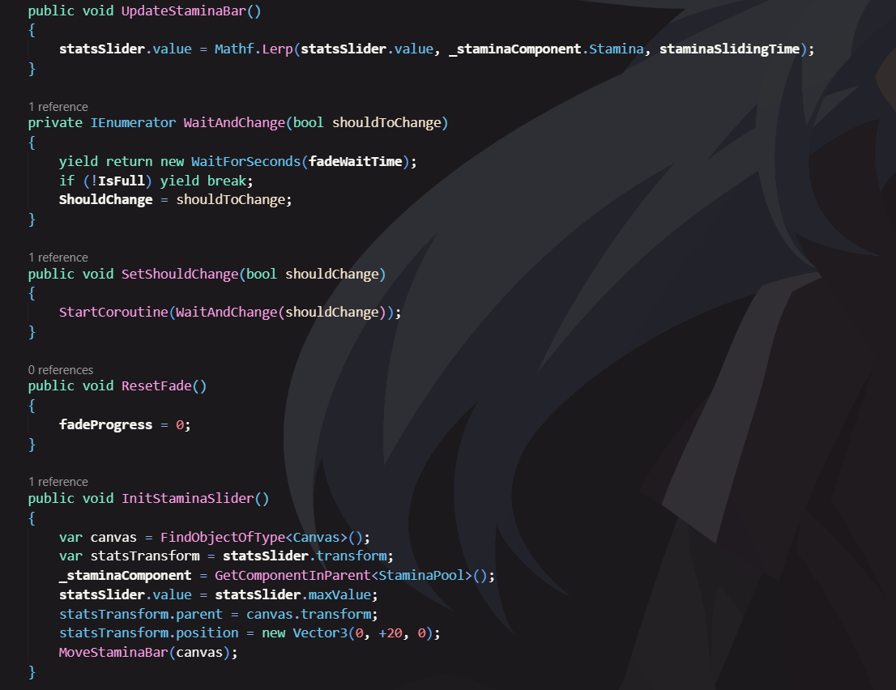

Expanding Space
Project Status: Finished
Project Type: Group
Project Duration: 8 weeks
Software Used: Unity
Languages Used: C#
Primary Role(s): Programmer, Git master
Team: 3 Devs, 4 Artists
About Expanding Space
"Expanding Space" was a collaborative project to develop an engaging game that would inspire space travel and astronomy interest amongst a younger audience.
It marked the first partnership between Game Developers and Game Artists, with each group comprising two developers and four artists.
But our group had an extra dev who joined the project at a later date. This was also the second time we worked with sprints if i recall correctly.
Sprint 0: Initial research phase.
Sprint 1 and 2: Concentrated on creating a playable game.
Sprint 3: Finish & Present the product on a project market.
My Features
- Player Movement
- Enemy AI
- UI
Software Used
- Navmesh
- TextMesh Pro
- Trello
Intro
Using Shader Graph to create a stamina bar in Unity offers several advantages
over traditional coding approaches. First, Shader Graph provides a visual and node-based interface,
making it more accessible for developers who may not have extensive experience with complex shader
programming languages. This can significantly reduce the learning curve and allow developers to
focus more on the visual aspects of the stamina bar rather than intricate coding details.
The Radial Stamina bar serves as a substitute for the previous stamina system due to popular demand
within our development team, inspired by the stamina bar in Zelda Breath of the Wild. This
collaborative project was undertaken in partnership with Jahvario Monkau. Given that the stamina bar
employs a shadergraph, it necessitated my acquisition of knowledge pertaining to shaders and their
integration within the stamina bar implementation.
Picture of the Radial

In the image above you can see the shape and size of the radial, as you can see it looks just like Zelda: Breath of the Wild!
Development
Learning Unity shader coding was a real challenge, just like tackling a tough assignment. At first, I had to grasp the concept of how shaders manipulate graphics. It felt like deciphering a secret code. Then, I delved into the shader language and its functions, which was like deciphering complex instructions. There were moments of frustration when my shaders didn't work as intended, just like when you hit roadblocks with an assignment. But, with determination and lots of trial and error, I started to understand how to control colors, lighting, and textures. Finally, I realized that shaders were like crafting a unique artistic expression for each object in the game. It was a demanding journey, but in the end, it was incredibly rewarding to see how shaders transformed the visual aspect of the game.
A function from the script.
In the snippet above you can see the code of when the staminabar is depleted and how long it takes to regenerate the stamina back.
How the radial would look in game

As seen above the stamina radial goes empty when running and when it hits 0, it plays an
animations and then regenerates the stamina back over time.
Conclusion
By leveraging Shader Graph, developers can create visually stunning and customizable stamina bars that align with the aesthetic and design requirements of their game, ultimately contributing to a more immersive and engaging gameplay experience for players.